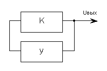
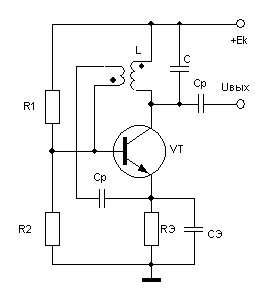
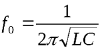
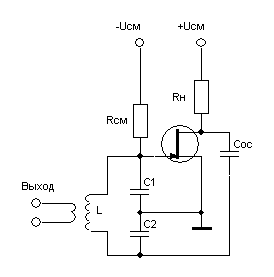
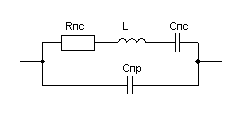
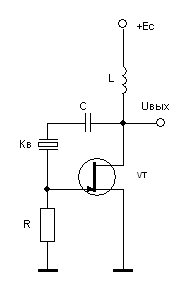
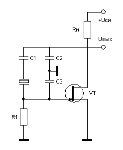
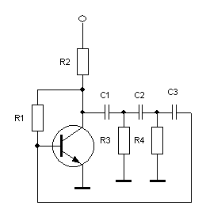
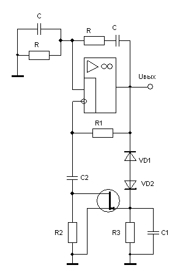
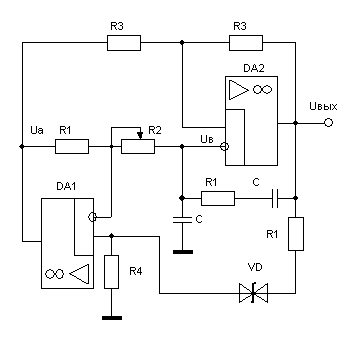

Генераторы синусоидальных колебаний
Данная группа генераторов предназначена для получения колебаний синусоидальной формы требуемой частоты. Их работа основана на принципе самовозбуждения усилителя ,охваченного положительной обратной связью (рис. 1). Коэффициент усиления и коэффициент передачи звена обратной связи приняты комплексными, т.е. учитывается их зависимость от частоты. При этом входным сигналом для усилителя в схеме рис. 1 является часть его выходного напряжения, передаваемого звеном обратной связи
|γ|<1

Рис. 1 – Структурная схема генератора
Для возбуждения колебаний в системе рис. 1 необходимо выполнение двух условий. Первое состоит в обеспечении баланса фаз, которое заключается в том, чтобы фазовые сдвиги, создаваемые усилителем (φу) и звеном обратной связи (φγ), в сумме должны быть кратными 2π:
φу+ φγ = 2πn
Второе условие , необходимое для возникновения генерации, это условие баланса амплитуд
|K||γ|≥1,
которое вытекает из общей формулы для усилителя, охваченного положительной обратной связью:
При выполнении баланса амплитуд усилитель компенсирует ослабление сигнала, создаваемое звеном обратной связи, и в схеме возникают устойчивые автоколебания. Для получения синусоидальной формы выходного сигнала используют несколько способов построения схем.
LC-генераторы
На рис. 2 показана схема LC-генератора c трансформаторной связью, которая представляет собой усилительный каскад, выполненный по схеме с общим эмиттером. В качестве коллекторной нагрузки используется резонансный LC-контур с высокой добротностью.

Рис. 2 - Схема генератора с трансформаторной связью
Сигнал обратной связи снимается со вторичной обмотки резонансного контура и через разделительный конденсатор Ср подается на базу транзистора обеспечивая суммарный фазовый сдвиг равный (баланс фаз). Если принять индуктивную связь между первичной (w1) и вторичной (w2) обмотками идеальной, для обеспечения баланса амплитуд необходимо выполнить условие:
где β - коэффициент усиления по току транзистора, число витков первичной и вторичной обмоток, соответственно.
Частота генерируемых колебаний близка к резонансной частоте колебательного контура:

На рис. 3 представлена часто используемая схема генератора Колпитца, выполненная на полевом транзисторе. Параллельный LC- контур установлен на входе и с выхода на вход через конденсатор Сос подается сигнал обратной связи. Частота синусоидальных колебаний напряжения на выходе генератора, как и в предыдущей схеме, обусловлена параметрами LC-контура.

Рис. 3 - Генератор Колпитца
Одним из важнейших параметров любого генератора является коэффициент нестабильности частоты генерируемых колебаний
где Δf - абсолютное отклонение частоты от номинального значения f.
За счет колебаний температуры и напряжения источника питания коэффициент нестабильности транзисторных LC-генераторов не превышает десятых долей процента.
Генераторы с кварцевой стабилизацией частоты
Существенное уменьшение нестабильности генераторов может быть достигнуто за счет использования кварцевого резонатора, который представляют собой особым образом вырезанную и отшлифованную пластину натурального или искусственного кварца. Кварц - пьезоэлектрик , поэтому упругие колебания кристалла могут быть вызваны приложением электрического поля, а эти колебания, в свою очередь, генерируют напряжение на гранях кристалла. В этом случае кристалл ведет себя как RLC-элемент, эквивалентная схема которого приведена на рис. 4.

Рис. 4 - Эквивалентная схема замещения кварцевого резонатора
Два конденсатора эквивалентной схемы дают пару близко расположенных резонансных частот – последовательного и параллельного контура, отличающихся друг от друга не более чем на 1%. В целом кварцевый резонатор ведет себя как резонансный контур с высокой добротностью (около 10000) и высокой стабильностью параметров. При включении резонатора в положительную обратную связь и выполнении условия баланса амплитуд на резонансной частоте возникают автоколебания.

Рис. 5 – Генератор Пирса
На рис. 5 представлен генератор синусоидальных колебаний на полевом транзисторе, который известен как генератор Пирса. За счет кварцевого резонатора фаза выходного сигнала изменяется на 180°, т.е суммарный сдвиг фазы по отношению к сигналу на затворе достигает 2π , что приводит к возникновению колебаний на резонансной частоте кварца.
Другая схема (рис. 6) представляет собой аналог генератора Колпитца (рис. 3), в котором LC – контур заменен кварцевым резонатором. Наличие кварцевого резонатора обеспечивает коэффициент нестабильности генератора не выше 10-6 в диапазоне температур от 0 до 50оС.

Рис. 6 – Кварцевый генератор Колпитца
Генераторы, аналогичные рассмотренным, целесообразно использовать на высоких частотах. Это связано с тем , что по мере снижения частоты генерации габаритные размеры LC- контура недопустимо возрастают. Изготовление кварцевых резонаторов на частоты ниже нескольких десятков килогерц также связано со значительными технологическими трудностями.
RC–генераторы
В генераторах этого типа баланс фаз достигается за счет специальной фазосдвигающей RC – цепи, устанавливаемой в цепи обратной связи. Схема простейшего RС-генератора на транзисторе приведена на рис. 7. Трехзвенная RC-цепь на частоте квазирезонанса обеспечивает сдвиг фазы, равный 180°. Схема с общим эмиттером, на которой собран генератор, изменяет фазу сигнала на выходе по отношению ко входному также на 180°, т.е. суммарный фазовый сдвиг равен 2π, за счет чего выполняется условие баланса фаз. При условии С1=С2=С3=С и R3=R4=Rвх VT = R коэффициент передачи трехзвенной RC-цепи равен примерно 1/29, поэтому, если коэффициент усиления транзисторного каскада КU< 29 , в схеме возникают колебания с частотой

Рис. 7 – RC-генератор на транзисторе
Не смотря на простоту схемы данный генератор находит ограниченное применение в практических устройствах. Это связано с тем, что коэффициент нелинейных искажение выходного напряжения может достигать 10% а стабильность частоты недостаточна. Следует отметить, что в схеме рис. 7 можно в некоторых пределах изменять частоту генерации. Для этого последовательно с резистором R3 устанавливают переменное сопротивление.

Рис. 8 – RC-генератор с мостом Вина
Наиболее часто для построения RC-генераторов используется мост Вина, который не имеет фазового сдвига на частоте квазирезонанса , а коэффициент передачи на этой частоте равен 1/3. На рис. 8 приведена генератора синусоидальных колебаний на основе моста Вина. Он представляет собой неинвертирующий усилитель с коэффициентом усиления (1+R1/R2), на неинвертирующий вход которого подается сигнал с моста Вина. Так как фазовый сдвиг моста Вина равен нулю, в схеме обеспечивается баланс фаз. Для обеспечения баланса амплитуд коэффициент усиления неинвертирующего усилителя должен быть К>3. Выполнение этого условия приводит к возникновению автоколебаний в схеме на частоте
Особенностью данного генератора является необходимость достаточно точно поддерживать величину коэффициента усиления усилителя. При уменьшении коэффициента усиления колебания затухают, при увеличении – амплитуда выходного напряжения начинает возрастать, вплоть до насыщения выходных каскадов усилителя, что приводит к искажению формы выходного сигнала. Для поддержания синусоидальной формы выходного напряжения в схеме рис. 8 предусмотрена цепь автоматической регулировки усиления (АРУ). Активным элементом АРУ является полевой транзистор, включенный параллельно резистору R2. Транзистор работает в режиме регулируемого резистора . На затвор транзистора подается выпрямленное и сглаженное напряжение с выхода генератора. При увеличении выходного напряжения транзистор подзапирается, его сопротивление "сток-исток" возрастает , шунтирующее действие транзистора уменьшается, что приводит к уменьшению коэффициента усиления усилителя, а значит и к восстановлению исходного значения амплитуды сигнала на выходе генератора. Уменьшение амплитуды выходного напряжения оказывает обратное действие.
Наличие глубокой отрицательной связи в схеме обеспечивает высокую стабильность усилительного звена в RC-генераторе. Поэтому температурная нестабильность частоты генераторов определяется, в основном, зависимостью от температуры параметров элементов RC-звена обратной связи. Поэтому в практических схемах данного вида можно получить значение коэффициента нестабильности на уровне δf=±0,1...3%.
Во многих случаях при практическом применении RC- генераторов синусоидальных колебаний возникает задача регулировки частоты. При построении генераторов с регулируемой частотой следует учитывать то факт, что изменение хотя бы одного из частотозадающих элементов изменяет условие возникновения генерации, что может привести к срыву колебаний. В силу этого в схеме рис. 7 регулировка частоты связана с определенными трудностями, так как при изменении величины резистора R3 требуется корректировка коэффициента усиления транзисторного усилителя. Однако изменение сопротивления R1 изменяет входное сопротивление транзисторного каскада, а изменение коллекторной нагрузки R2 может привести к изменению параметров рабочей точки транзистора и его переходу в нелинейный режим работы. Это ограничивает практическое использование генератора рис. 7 в схемах с регулируемой частотой.
В генераторе на основе моста Вина условие устойчивой генерации заключается в том, чтобы коэффициент усиления сигнала по цепям положительной и отрицательной обратной связи был равен единице на любой частоте. Поэтому при изменении частоты колебаний выходного напряжения в генераторах необходимо использовать сдвоенный потенциометр (или конденсатор). Однако использование сдвоенных регулирующих элементов имеет определенные неудобства.
В схеме рис. 9 потенциометр R2 является одним из элементов моста Вина и его регулировка изменяет частоту генерации в соответствии с выражением
Одновременно R2 является входным резистором инвертирующего усилителя на DA1, который формирует сигнал отрицательной обратной связи Uа на вход операционного усилителя DA2.Например, при уменьшении R2 увеличивается частота колебаний и одновременно уменьшается сигнал положительной обратной связи Uв на неинвертирующем входе DA2.

Рис. 9 – Схема регулировки частоты генератора
Однако уменьшение R2 приводит к увеличению коэффициента усиления DA1 (K= - R1 / R2), а значит и к увеличению сигнала отрицательной обратной связи Uа, т.е. суммарное усиление по цепям положительной и отрицательной обратной связи остается равным единице при всех изменениях сопротивления R2. Cтабилитрон VD играет роль АРУ , обеспечивая неизменную амплитуду Uвых при изменении частоты в пределах декады.